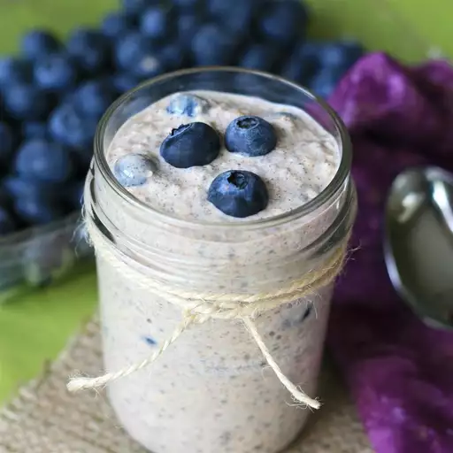

Overnight Oats

Looking for an easy to make and highly nutritional breakfast?
And to top it all you can make it with pretty much anything! So the taste is 100% guaranteed.
Ingredients
- Milk
- Yogurt
- Oats
- Honey
- Chia seeds
- Cinnamon
- Berries
Steps
- Combine all the ingredients (besides the fruit) in a jar, seal, and shake.
- Open the jar and fold in the fruit.
- Seal the jar and refrigerate overnight.